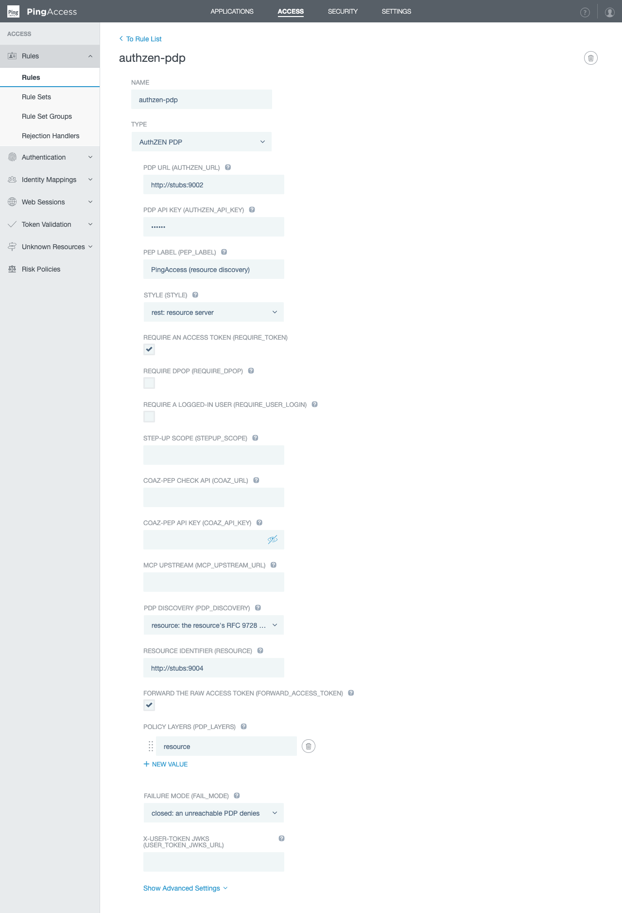

Configuring the AuthZEN enforcement points
One page per component, every configurable item with its type, default and meaning, and a complete working configuration for each. Where a component has a screen, the screen is shown. Where it does not, what the setting produces is shown instead.
The components
The engine. Serves Envoy ext_authz gRPC and an HTTP check API; owns PDP discovery, federation, token validation, DPoP and COAZ. Configured by environment variables and per-route knobs.
gateways/envoy/ · YAMLEnvoy · Istio · agentgatewayHow to attach coaz-pep as an external authorizer, and how per-route knobs travel as ext_authz context_extensions.
authzen-pdp: native REST and MCP mapping, RFC 9728 and AuthZEN discovery in Lua; DPoP, COAZ and federation delegated to coaz-pep. Configured as plugin config, shown in Kong Manager.
AuthZEN PDP: an Add-on SDK rule with the same knobs, configured in the PingAccess console or admin API.
@id-partners/authzen-pep: an AuthZEN client, Express middleware, an MCP guard and a federation entity, configured as options in code.
Every component above wired together with a stub federation and PDPs, the console, and the levers. Its compose file is the fullest worked configuration in the repository.
Where each setting lives
Every enforcement point takes the same set of knobs, spelled the same way. What differs is only the channel they arrive through.
| Component | Service-wide settings | Per-route settings | Screen |
|---|---|---|---|
| coaz-pep | environment variables | ext_authz context_extensions, or the config object of an HTTP check | none; its effects show in the demo console and in the documents it serves |
| Envoy · Istio · agentgateway | the coaz-pep deployment's environment | context_extensions in the filter, the EnvoyFilter, or the agentgateway policy context | none |
| Kong plugin | — | plugin config on a route or service | Kong Manager |
| PingAccess rule | — | the rule's configuration, attached to an application's API policy | the PingAccess console |
| Node SDK | client options | middleware, guard and per-call options | none |
Settings every PEP shares
These names mean the same thing on every surface. Each component page lists them again with that component's spelling, defaults and channel.
| Setting | What it decides |
|---|---|
authzen_url / AUTHZEN_URL | The static PDP. Always the fallback, always permitted; the one PDP that receives the configured API key. |
style | rest maps an HTTP request to an evaluation; mcp treats the route as an MCP edge and authorises JSON-RPC. |
require_token | Deny a request that carries no readable access token. |
require_dpop | Enforce the RFC 9449 sender constraint. Kong and PingAccess delegate the proof check to coaz-pep. |
require_user_login, stepup_scope, stepup_action | The RFC 9470 challenges: demand a logged-in end user, and a consented scope for a named action. |
mcp_upstream_url | The MCP server whose tools/list declares the COAZ mappings. Setting it enables per-tool-call authorisation. |
pdp_discovery / PDP_DISCOVERY | off, authzen, resource, or (coaz-pep only) federation. How the PDP is found. |
resource | The protected resource's identifier, RFC 8707. The key discovery starts from. |
pdp_allowlist, resource_metadata_allowlist | What discovery may reach: which PDPs a document may name, which resources may be looked up. |
forward_access_token | Hand the PDP the raw token as context.access_token. Only over a TLS, authenticated PDP connection. |
pdp_layers, fail_mode | The ordered PDPs to ask, every one of which must permit, and what a layer does when its PDP cannot be reached. |
federation_entity_url / FEDERATION_ENTITY_ID | Serve the resource's two well-known documents: coaz-pep holds the key; Kong and PingAccess relay from it. |
coaz_defaults, legacy_subject_identity | Apply the COAZ binding's default mappings to undeclared methods; keep sending the pre-AuthZEN subject.identity field. |
What has a screen
Two of the five surfaces have a console: Kong Manager shows a plugin's configuration, and the PingAccess console draws a form from the rule's descriptor. Both are captured on their pages. coaz-pep, the Envoy family and the Node SDK are configured in files and code, so there is no form to show. For those, the pages show what a setting produces: the startup log that names what is set, the well-known documents the PEP serves, and the demo console's trace of a request under that configuration.


Conventions
- Allowlists are lists of URL prefixes. An entry matches on scheme, host and port at a path boundary:
https://pdp.exampleadmitshttps://pdp.example/tenants/aand refuseshttps://pdp.example.evil.test. Comma-separated in environment variables, arrays in plugin config and code. - Layer lists are ordered. An entry is
static,resource, or a PDP identifier, optionally followed by a space andfail-openorfail-closed:https://estate.example fail-open, resource. Comma-separated in environment variables and Envoy knobs, arrays elsewhere. - Booleans in per-route knobs are the strings
"true"and"false", because ext_authzcontext_extensionscarries only strings. Kong and PingAccess use real booleans; the Node SDK usestrueandfalse. - Durations: Go durations in environment variables (
15s,5m), seconds in Kong and PingAccess, milliseconds in the Node SDK. - Well-known paths: RFC 9728 inserts its segment after the host and keeps the identifier's path after it (
/.well-known/oauth-protected-resource/bank); AuthZEN does the same (/.well-known/authzen-configuration/tenants/bank-a); OpenID Federation appends its segment to the identifier's path (/bank/.well-known/openid-federation). - Fail closed is the default everywhere: a PDP that cannot be reached is a 503 (Envoy family, Kong, PingAccess) or a
pdp_errorverdict rendered as 502 (Node).fail_modeand a layer's own modifier are the only ways to change that, and neither ever turns a deny or a refusal into a permit.